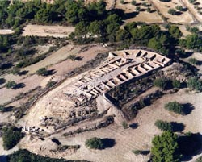
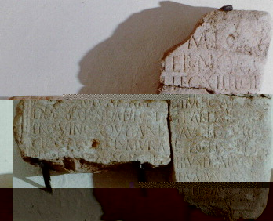

|
EDETA - LAURO En Lliria se conocen asentamientos desde el Paleolítico, pasando por la edad de bronce, etc.. Tuvieron contactos comerciales con los colonos fenicios y griegos. La actual comarca del Camp de Túria formaba parte de la región conocida como Edetánia, desde donde el rey Edecon, año 220 a.e.c. gobernaba un extenso territorio que comprendía desde el río Palancia hasta el río Júcar. Su categoría política, económica así como su estratégica posición, le hicieron jugar un papel importante en las guerras civiles romanas. Durante las guerras civiles romanas, Edeta fue fiel a la facción republicana, representada en Hispania por Pompeyo Magno. Edeta
Fue atacada y destruida
por los ejércitos de Sertorio en el año 76 a.e.c. el asedio a la ciudad se
produjo desde Pallancia (Riba-roja), lugar donde tomó Pompeyo posiciones.
Castellet de Bernabé Oppidium destinado a la explotación agraria y ganadera. Fue la residencia de una familia de la elite edetana que convivía con un grupo de familias dependientes. Data del siglo V-III a.e.c.
 La Mont-ravana Poblado ibero. Su cronología data del siglo V-II a.e.c. Conserva todo el recinto amurallado. Probablemente estaba dedicado a la transformación de alimentos.
Lauro
La nueva ciudad Lauro fue municipio de
derecho romano y el momento de máximo esplendor lo consiguió a finales del siglo
I, principios del siglo II.
La epigrafía romana en Llíria es muy numerosa. Destaca la del edetano M. Cornelius Nigrinus, nacido en el año 40, gobernador de Aquitánia, Moesia y Siria, general de los ejércitos del emperador Domiciano y un destacado rival de Trajano en la sucesión al trono imperial, se pueden ver restos sobre piedra que hacen referencia a dicho emperador en los alrededores de la iglesia de la Sang.
 Otro monumento es la ermita de Sant Vicent, que en época romana la fuente era un Templo dedicado a las ninfas, diosas de las aguas relacionadas con la salud y la fecundidad.
|